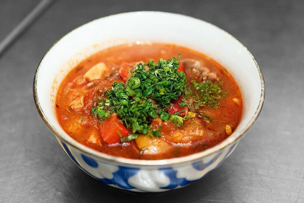
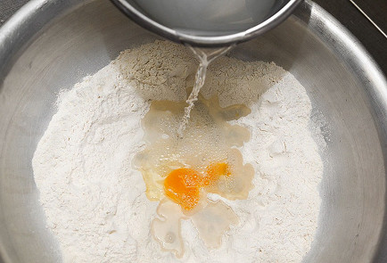
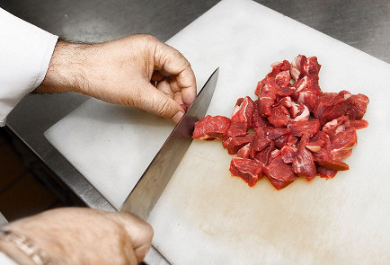
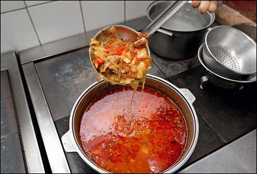
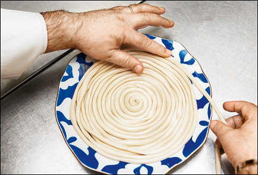
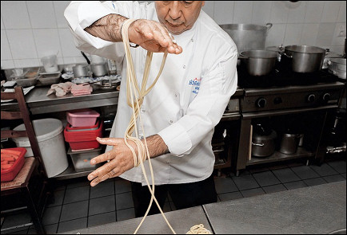
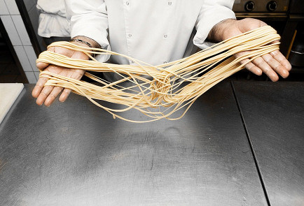
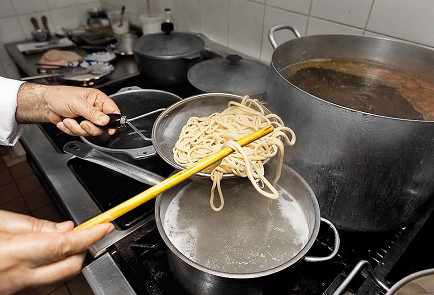

Лагман

У лагмана такая длинная история — как лапша, которую для него тянут. Его считают своим уйгуры, но и узбеки считают своим тоже. Как и китайцы, которые называют его ламянем. А еще есть у лагмана дальний японский родственник рамен.
| ЭНЕРГЕТИЧЕСКАЯ ЦЕННОСТЬ НА ПОРЦИЮ | |||
|---|---|---|---|
| КАЛОРИЙНОСТЬ | БЕЛКИ | ЖИРЫ | УГЛЕВОДЫ |
|
1021 ККАЛ |
33 ГРАММ |
44 ГРАММ |
126 ГРАММ |
ИНГРЕДИЕНТЫ
- Анис (бадьян) - 5,5 г
- Пшеничная мука - 1 кг
- Куриное яйцо - 1 штука
- Репчатый лук - 320 г
- Баранина - 640 г
- Сладкий перец - 420 г
- Помидоры - 200 г
- Чеснок - 120 г
- Стебель сельдерея - 80 г
- Стручковая фасоль - 120 г
- Томатная паста - 120 г
- Растительное масло - 180 мл
- Зелень сельдерея - 20 г
- Зеленый лук - 20 г
- Укроп - 20 г
- Семена кориандра - 5,5 г
- Молотая паприка - 10 г
- Соль - 30 г
ИНСТРУКЦИЯ ПРИГОТОВЛЕНИЯ
|  |
1 Соль (20 г) растворить в полутора стаканах холодной воды. Муку высыпать в таз и разбить в нее яйцо. Постепенно вливая солевой раствор, замесить тесто. Оно должно стать эластичным, не слишком мягким, но и не слишком жестким, так что может оказаться, что раствор понадобится не весь. Готовое тесто накрыть пленкой и оставить на два часа. |
|  |
2 Тем временем очистить и нарезать довольно крупно лук, сладкий перец, помидоры, фасоль, стебли сельдерея и чеснок. Баранину (мякоть) нарезать среднего размера кубиками. Разогреть в казане две столовые ложки растительного масла и готовить мясо до образования поджаристой корочки. |
|  |
3 Добавить к мясу лук, чуть позже — помидоры, через пять минут — чеснок, стебли сельдерея, томатную пасту и специи (кроме паприки). Тушить полтора-два часа. За четверть часа до конца добавить сладкий перец, фасоль и паприку, а за пять минут — зелень сельдерея. Подливу разбавить водой или мясным бульоном до нужной консистенции, посолить, довести до кипения, помешивая. |
|  |
4 Тесто разделить на несколько кусков. С каждым проделать следующее: смазав растительным маслом, мять его руками и раскатывать, превращая в жгут. Когда тот станет удобно тонким, постепенно растянуть его еще больше, пропуская между пальцами сначала в одну сторону, потом в другую. Затем нужно уложить тесто спиралью на тарелку и оставить еще минут на десять. |
|  |
5 После этого протянуть лапшу между пальцами еще несколько раз, чтобы в итоге толщина ее достигла двух-трех примерно миллиметров. После чего скрепить кончики двух шнуров из теста и намотать их на запястья восьмеркой: то на одно, то на другое. |
|  |
6 Следом аккуратно, рассчитывая силы, чтобы не порвать лапшу, разводить руки и прихлопывать время от времени по столу — так, чтобы лапша по толщине приблизилась, насколько можно, к спагетти. |
|  |
7 Выложить лапшу в сито, опустить в кипящую подсоленную воду, варить две-три минуты — после чего вынуть и промыть холодной проточной водой. Разделить лапшу на порции. |
|
8 Готовую лапшу выложить в сито и ошпарить в кипящей воде — порцию за порцией. Разложить по тарелкам, залить важу (так называется подлива) и посыпать мелко нарезанным зеленым луком и укропом. |